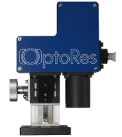
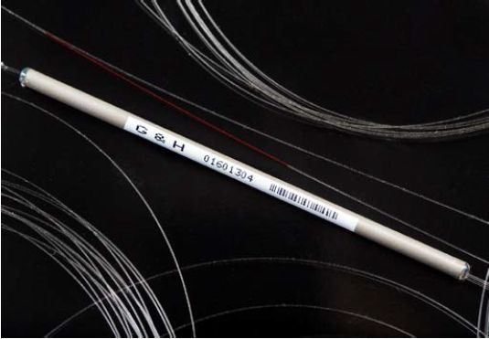

Where to Buy Optical Coherence Tomography
Definition: an imaging technology based on which light interferometry, used mostly for medical diagnosis
See also our encyclopedia article on optical coherence tomography!
7 suppliers for optical coherence tomography are listed in the RP Photonics Buyer's Guide. Both manufacturers and distributors can be registered.
| Suppliers with Ad Package | |
|---|---|
| Company | Product Description |
 The world's fastest OCT solutions. Gollierstr. 70 80339 München Germany |  The Optores Megahertz system (OMES) is a complete OCT imaging solution that combines Optores' groundbreaking FDML laser and GPU processing technology to a turnkey research OCT system. With speeds beyond of 1.5 MHz, OMES provides continuous "4D" video-rate OCT to visualize three-dimensional sample structure in real time. OMES are turnkey systems that are fully functional right out of the box while providing true research-grade access to raw data when needed. |
 Dowlish Ford Ilminster TA19 0PF United Kingdom |  Gooch & Housego is an established manufacturer of high quality optical components and optical sub-systems for the biomedical imaging market with manufacturing bases in the UK and the USA. Our extremely wideband optical coupler offers uniform performance over a 140 nm wavelength range for spectral domain OCT, and can be integrated into modules like our OCT optical delay line. We also offer a compact OCT optical spectrometer with high resolution and image capture rate, completing a line of modular OCT components that may be purchased for research and OEM use, or integrated by our engineering team into a customized, complete system. |
 All wavelengths. Lochhamer Schlag 19 82166 Gräfelfing Germany Quality: ISO 9001:2015 www.toptica.com Social: Facebook, LinkedIn, YouTube E-mail: Tel.: +49 89 85 83 70 Fax: +49 89 85 83 72 00 | Originally developed for ophthalmology, Optical Coherence Tomography (OCT) now spreads over to a variety of applications. The benefit of this technique is the imaging capability of sample structures even at a few millimeters depth with micrometer resolution. For example, invisible defects lying underneath the surface of manufactured parts or different layers in biological tissue and in medieval paintings can be visualized. OCT relies on low coherence interferometry utilizing spectrally broad light sources like superluminescent diodes or femtosecond lasers. TOPTICA has developed a new optical sampling method: Electronically Controlled Optical Sampling (ECOPS), which speeds up TD-OCT measurements by several orders of magnitude avoiding movable parts in the set-up, using two synchronized femtosecond fiber lasers. The imaging depth remains large and the scan can be hold on any position or zoomed in on interesting features in the OCT image. |
| Your products are not listed here? Get an ad package! | |
| All Suppliers | |
|---|---|
Dowlish Ford Ilminster TA19 0PF United Kingdom | Gooch & Housego is an established manufacturer of high quality optical components and optical sub-systems for the biomedical imaging market with manufacturing bases in the UK and the USA. Our extremely wideband optical coupler offers uniform performance over a 140 nm wavelength range for spectral domain OCT, and can be integrated into modules like our OCT optical delay line. We also offer a compact OCT optical spectrometer with high resolution and image capture rate, completing a line of modular OCT components that may be purchased for research and OEM use, or integrated by our engineering team into a customized, complete system. |
1387 Fairport Road, Suite 890 Fairport, NY 14450 United States | |
Insight Photonic Solutions, Inc. 300 South Public Road, Ste. 202 Lafayette, CO 80026 United States | |
Risø Campus Building 130 Frederiksborgvej 399 4000 Roskilde Denmark | norlase.com Tel.: +45 9397 74 72 |
The world's fastest OCT solutions. Gollierstr. 70 80339 München Germany | The Optores Megahertz system (OMES) is a complete OCT imaging solution that combines Optores' groundbreaking FDML laser and GPU processing technology to a turnkey research OCT system. With speeds beyond of 1.5 MHz, OMES provides continuous "4D" video-rate OCT to visualize three-dimensional sample structure in real time. OMES are turnkey systems that are fully functional right out of the box while providing true research-grade access to raw data when needed. |
515 Lee Road Rochester, NY 14606 United States | |
All wavelengths. Lochhamer Schlag 19 82166 Gräfelfing Germany Quality: ISO 9001:2015 www.toptica.com Social: Facebook, LinkedIn, YouTube E-mail: Tel.: +49 89 85 83 70 Fax: +49 89 85 83 72 00 | Originally developed for ophthalmology, Optical Coherence Tomography (OCT) now spreads over to a variety of applications. The benefit of this technique is the imaging capability of sample structures even at a few millimeters depth with micrometer resolution. For example, invisible defects lying underneath the surface of manufactured parts or different layers in biological tissue and in medieval paintings can be visualized. OCT relies on low coherence interferometry utilizing spectrally broad light sources like superluminescent diodes or femtosecond lasers. TOPTICA has developed a new optical sampling method: Electronically Controlled Optical Sampling (ECOPS), which speeds up TD-OCT measurements by several orders of magnitude avoiding movable parts in the set-up, using two synchronized femtosecond fiber lasers. The imaging depth remains large and the scan can be hold on any position or zoomed in on interesting features in the OCT image. |
Click on a company entry to mark it. Product entries of suppliers having an ad package are displayed with a logo, product description and product image. | |
Users: if any displayed information is incorrect (e.g., a listed supplier does not offer such products) or legally problematic, please notify RP Photonics so that the problem can be solved.
Suppliers: you can report modified data using a form, which is provided via the button "Edit profile data" on your company profile page. You can obtain ad package for getting a much improved visibility and many more leads.
If you are a supplier and want to be listed, please use the registration form.
An already registered supplier can use a customized form to report the full list of offered photonics products. That form is reachable with a link at the bottom of the supplier's profile page.
Anyone, not only suppliers themselves, can report additional suppliers. If possible, please provide a web address showing that this supplier indeed offers such products.
If you like this buyer's guide, share it with your friends and colleagues, e.g. via social media: